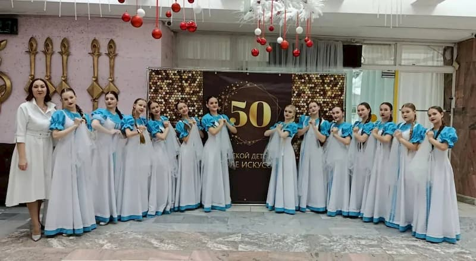
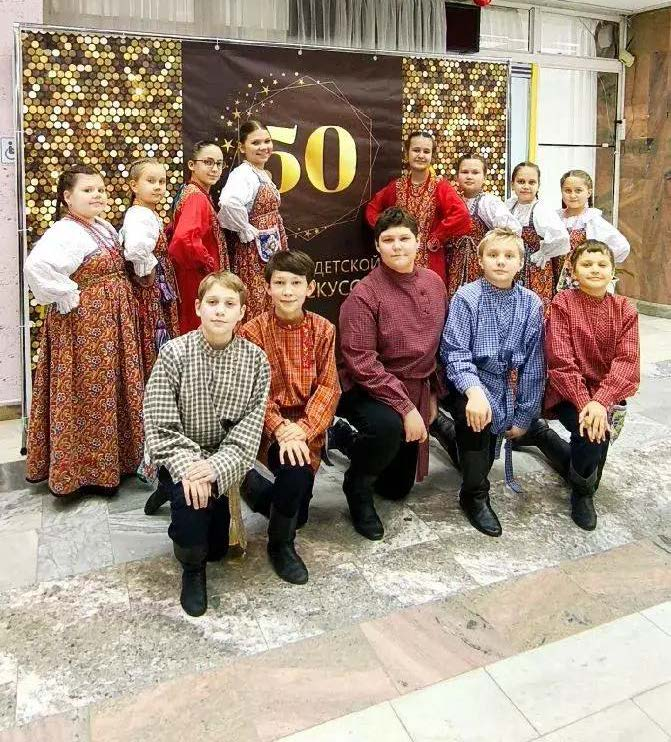

Коллектив типографии «Лазурь» сердечно поздравляет Режевскую детскую школу искусств со знаменательным 50-летием! Мы гордимся тем, что вы доверили нам печать праздничной полиграфии к этому важному событию и стали частью вашего праздника. С большим вниманием к деталям мы отпечатали готовый дизайн-макет юбилейного буклета и сувенирную продукцию.
Коллектив типографии «Лазурь» сердечно поздравляет Режевскую детскую школу искусств со знаменательным 50-летием! Мы гордимся тем, что вы доверили нам печать праздничной полиграфии к этому важному событию и стали частью вашего праздника. С большим вниманием к деталям мы отпечатали готовый дизайн-макет юбилейного буклета и сувенирную продукцию.

Работая над тиражом, мы с интересом погрузились в богатую историю школы, которая легла в основу материалов. Позвольте и нам разделить с вами эти памятные вехи.
Режевская Детская школа искусств открыла свои двери в 1975 году решением исполнительского комитета Режевского городского совета депутатов трудящихся. В решении отделу культуры горисполкома поручалось укомплектовать школу специалистами, а химический завод просили выделить 6 тысяч рублей для приобретения инвентаря и оборудования.
Открывал школу Андрей Михайлович Быстров. Из воспоминаний первого директора: «Кажется, совсем это было недавно, когда тёплым сентябрьским днём 1975 года нарядные девочки и мальчики с букетами цветов, с радостными улыбками на лицах собрались у дверей школы искусств — она принимала своих первых учеников».
Как положено при открытии, разрезали ленту, звучали напутственные слова родителей и представителей городской администрации. Среди почётных гостей были директор химзавода Василий Павлович Голубцов и заведующая отделом культуры Алла Ивановна Макаренкова, благодаря которым дети Режа получили возможность учиться прекрасному.
Первыми педагогами стали: Людмила Михайловна Жукова, Любовь Юрьевна и Евгений Андреевич Томиловы, Валерий Михайлович Яшкин во главе с директором Андреем Михайловичем Быстровым — молодые, полные творческих замыслов. Они учили детей игре на инструментах, петь, рисовать, выступали с концертами, открывали выставки, помогали художественной самодеятельности химзавода.
В 1990 году школу возглавил Сергей Петрович Тарабаев. Год спустя, в 1991-м, школа переехала в новое здание. С приходом молодых педагогов Ольги Александровны Гирш и Татьяны Юрьевны Гребенщиковой открылись новые отделения: народно-хоровое и хореографическое, а контингент учащихся заметно увеличился.
С 2000 года школа стала располагаться уже в трёх микрорайонах города, расширяя творческое пространство. Важным этапом стало событие 2019 года, когда постановлением Правительства Свердловской области Режевская детская школа искусств была принята в государственную собственность региона, что подчеркнуло её высокий статус и значимость.
Наша миссия как типографии заключалась в том, чтобы с максимальной точностью и качеством перенести на бумагу уже готовый, красивый дизайн юбилейных материалов. Мы бережно отнеслись к каждому оттенку, каждой линии, стремясь, чтобы финальный результат полностью соответствовал замыслу авторов и стал достойным оформлением для такой яркой истории.
«Лазурь» благодарит Режевскую ДШИ за выбор в качестве полиграфического партнера. Для нас большая честь знать, что наши профессиональные услуги помогают сохранять и передавать память о важнейших событиях в жизни наших клиентов.
Желаем школе дальнейшего процветания, громких успехов учеников, вдохновения педагогам и новых творческих свершений! Пусть ваша история продолжается еще много славных лет.

С уважением, коллектив ИПК «Лазурь». Мы точно воплощаем ваши идеи в печати.